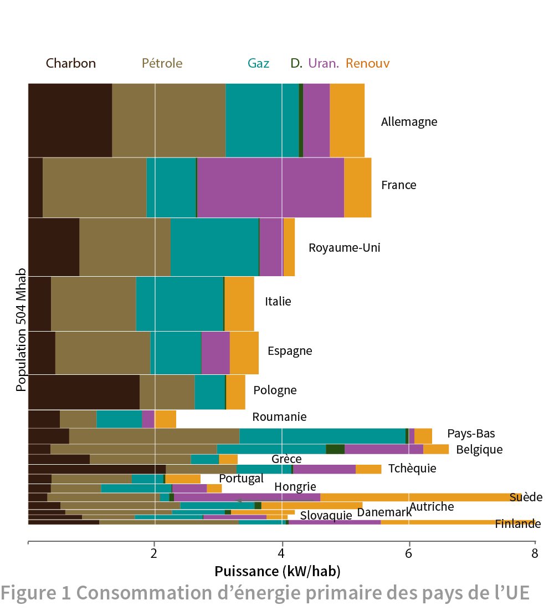
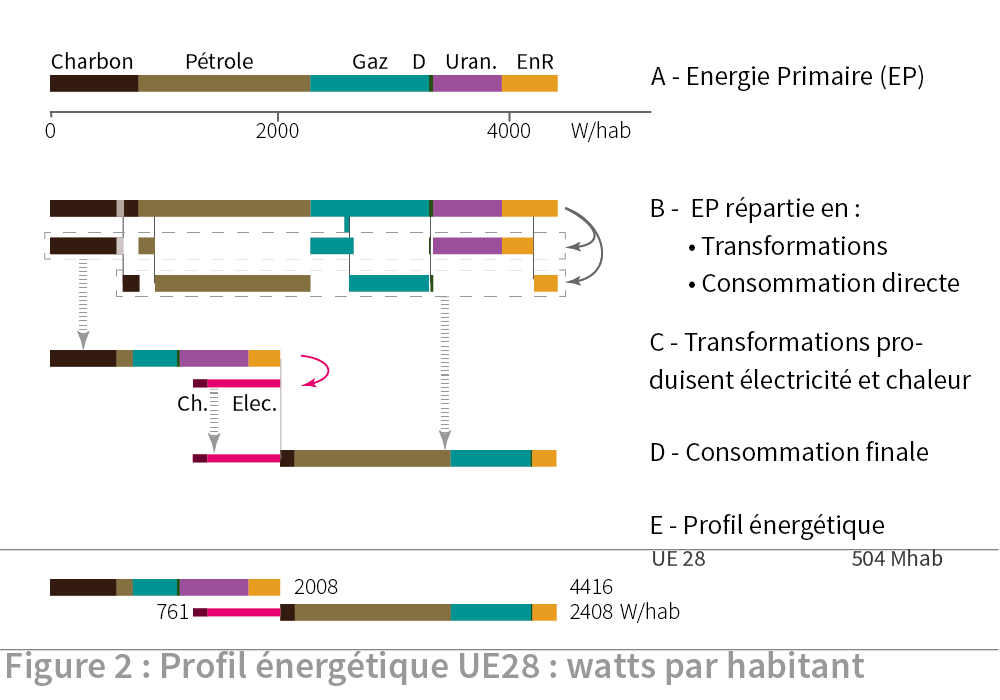
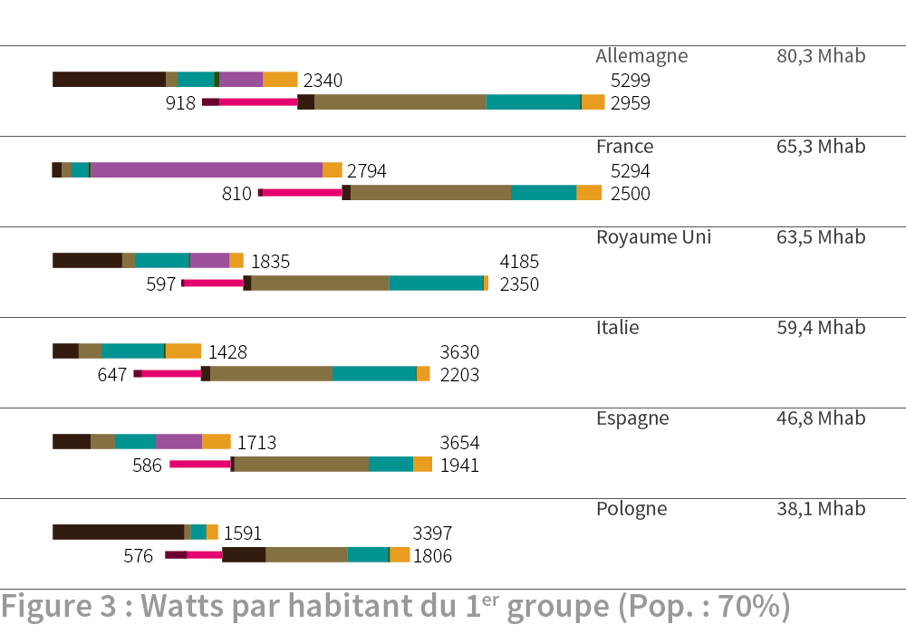
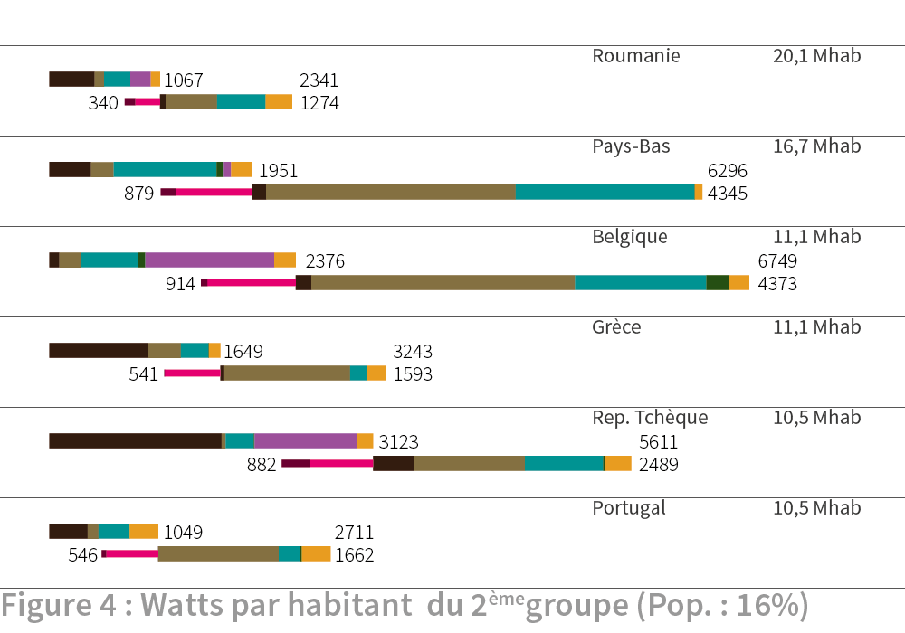
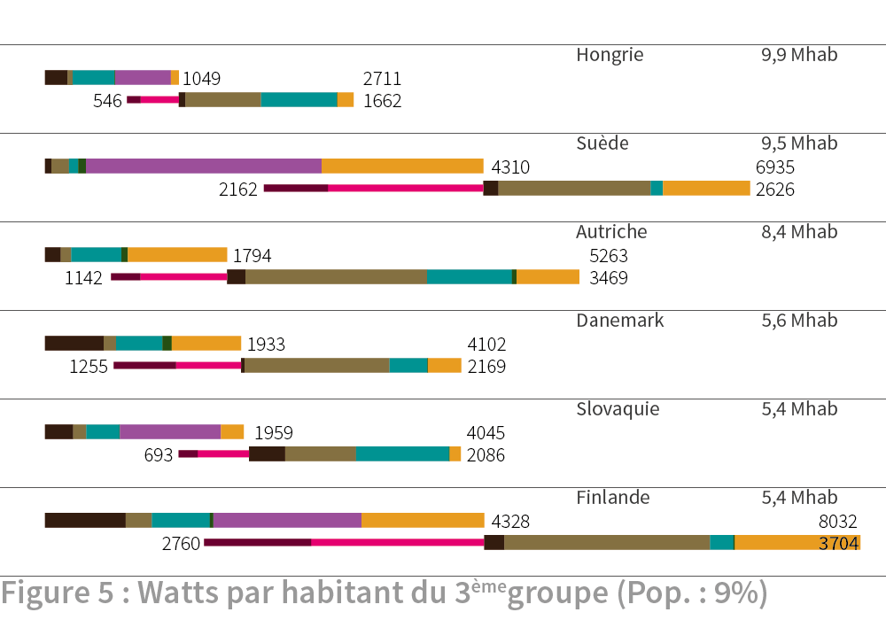

1. Repères
Cet article examine l’énergie produite et utilisée dans différents pays européens. Il montre d’où vient l’énergie primaire et à quoi elle est destinée : consommation directe ou transformation en une autre forme d’énergie (électricité, chaleur).
L’énergie primaire désigne l’énergie contenue dans les matières premières extraites du sol (charbon, pétrole, uranium, etc.) ou celle qui est captée dans les flux environnementaux (soleil, rivière, etc.). L’énergie primaire mesure le potentiel énergétique de cette source initiale, avant transformation.

La figure 1 présente l’énergie primaire consommée en 2012 dans les dix-huit pays de l’UE les plus peuplés. A chaque pays correspond une barre horizontale dont la longueur mesure la dépense d’énergie par an, soit un débit d’énergie ou puissance dépensée en moyenne sur l’année. La puissance est mesurée en kilowatt (1 kW = 0,75 tep/an) et est rapportée à un habitant ce qui donne la meilleure base de comparaison entre différents pays. La barre a une épaisseur proportionnelle à la population du pays, part de la population de 504 millions d’Européens. Les 18 pays retenus comptent au moins cinq millions d’habitants et représentent au total 95% de la population européenne. La hauteur de l’espace vide entre le dernier pays retenu (Finlande) et l’axe horizontal correspond à la population des dix plus petits pays de l’UE28 non représentés.
Le premier constat est la grande disparité des puissances consommées par habitant (kW/hab ou simplement kW dans la suite du texte) avec des valeurs qui vont du simple au triple, de 2,5 kW pour un Roumain à 8 kW pour un Finlandais. Le deuxième constat est la diversité des mix énergétiques des pays. Ceux-ci sont figurés par la segmentation des barres en couleurs qui symbolisent les sources d’énergie listées en haut du graphique. Les mix énergétiques des pays sont très divers avec de grandes disparités de dépense de charbon et de gaz, de fortes variations des renouvelables et la présence ou non de l’uranium. Cette diversité des mix résulte de la géographie physique et de la nature des ressources naturelles, de la densité de population, de l’histoire et des choix des politiques énergétiques. L’étude de la figure révèle des résultats sur les dépenses énergétiques ignorés ou contraires à certaines idées reçues. Le lecteur les découvrira par lui-même.
Mais ce graphique ne donne pas ce que chacun connaît par sa consommation personnelle faite d’essence pour sa voiture, de gaz pour son chauffage et d’électricité pour ses appareils domestiques, pour citer quelques exemples. Cette consommation personnelle participe de la consommation finale, celle qui est en bout de la chaîne où elle rejoint la consommation de l’industrie, de l’agriculture ou des services. Toute la consommation finale provient exclusivement de l’énergie primaire qui est intégralement dépensée à cette fin. C’est le principe de la conservation de l’énergie. Toutefois lors de la consommation finale on peut utiliser non seulement la forme primaire de l’énergie (gaz, pétrole, bois) mais aussi une forme seconde résultant d’une transformation. L’électricité en est le meilleur exemple puisqu’elle n’est pas prélevée directement dans la nature mais obtenue à l’issue d’une transformation, que ce soit la combustion du charbon dans une centrale, la fission de l’uranium ou la rotation d’une éolienne par le vent. On propose donc un nouveau graphique qui réunisse énergie primaire et consommation finale en intégrant les transformations éventuelles.

La figure 2 explique le principe et la construction de ce graphique et détaille les étapes pour y parvenir :
A- L'énergie primaire consommée annuellement par habitant de l'UE est donnée par la longueur de la barre horizontale colorée suivant les sources, de même que dans la figure 1.
B- Cette puissance primaire est répartie vers deux destinations: transformation en une autre forme d'énergie (électricité, chaleur) ou consommation directe après simple conditionnement (raffinage du pétrole par exemple). Un trait vertical indique la bifurcation le pétrole et les renouvelables. Pour le charbon, la lacune claire marque la production de gaz de synthèse qui vient s'ajouter au gaz naturel.
C- La puissance primaire alimentant la transformation est rassemblée dans la barre supérieure. Les produits de la transformation sont l’électricité et la chaleur pour l'essentiel, représentées par la barre inférieure moins épaisse pour les différencier de la puissance primaire 1. Electricité et chaleur donnent au total moins de la moitié de la puissance primaire entrante. C’est le résultat du principe de Carnot qui établit la limite supérieure de la puissance mécanique, et donc électrique, récupérable entre deux températures, une élevée et celle ambiante. La chaleur cédée à l'environnement peut-être utilisée auparavant dans un réseau de chauffage urbain ou des procédés industriels. Pour les flux renouvelables (soleil, eau, vent), il est convenu de mesurer la puissance primaire à l’électricité produite (et non au flux solaire par exemple).
D- La consommation finale s’alimente de l’électricité et de la chaleur et de la puissance primaire allant directement à la consommation sans transformation majeure (gaz, essence, bois).
E- En réunissant débit d’énergie primaire alimentant les transformations (C) et puissance de la consommation finale (D), on obtient le profil énergétique de l’Européen moyen.
Les profils des 18 pays les plus peuplés de l’UE sont présentés dans trois figures groupant chacune six pays. Ils apparaissent par taille de population décroissante.

La figure 3 présente les six plus grands pays qui regroupent 70% de la population européenne. Il se trouve que leurs consommations individuelles décroissent dans l’ordre d’apparition, effet d’un hasard qui ne se reproduit pas dans les autres figures. Allemagne et France sont ex-aequo mais présentent des différences notables du mix. Une part plus importante d’énergie primaire est consacrée en France à la production électrique, avec une forte part de nucléaire qui évite l’usage des énergies fossiles. L’Allemagne a recours aux énergies fossiles pour les deux tiers de sa production électrique, au charbon en particulier. Nucléaire et renouvelables se partagent le dernier tiers et on peut s’interroger sur ce qui, des fossiles ou des renouvelables, prendra la place du nucléaire en voie d’abandon. Par contre les consommations finales des deux pays sont similaires. Le pétrole est au même niveau, le gaz est plus consommé en Allemagne (environ 50% de plus) ; la part de renouvelable de la consommation finale est un peu plus élevée en France qu’en Allemagne, un fait méconnu mis en évidence par Géopolitique de l’électricité 2.
Le Royaume Uni présente une consommation plus faible, un peu inférieure à la moyenne européenne de 4,4 kW. C’est surtout la part ‘transformée’ en électricité qui est réduite par rapport aux précédents pays, car les consommations finales de pétrole et de gaz sont à nouveau assez proches. Notons une part des renouvelables faible et limitée à la production d’électricité. Les énergies fossiles, gaz et pétrole surtout, représentent une grande part de la consommation. Le nucléaire, suivi des renouvelables, permet de décarboner un peu un mix par ailleurs très dépendant des fossiles.
Italie et Espagne ont des profils assez proches, avec une différence pour le nucléaire qui est présent en Espagne et lui assure une production plus élevée d’électricité. Les énergies renouvelables prennent une bonne part dans le mix des deux pays qui dépendent encore beaucoup des fossiles. La Pologne recourt presqu’exclusivement aux énergies fossiles et le charbon domine la production électrique. Toutefois la consommation est la plus faible du groupe (3,4 kW).

Les six pays suivants qui regroupent 16% de la population présentent des profils énergétiques très différents, avec une consommation d’énergie primaire qui varie presque du simple au triple.
Les Pays-Bas et la Belgique ont les consommations les plus élevées (6,3 et 6,7 kW), avec beaucoup de pétrole et de gaz dans les usages finaux, pour les transports et le chauffage des habitations. Ils ont peu de renouvelables en proportion de leur consommation. La Belgique est beaucoup moins dépendante des énergies fossiles, surtout dans la production d’électricité qui est supérieure à celle des Pays-Bas et alimentée en grande partie par le nucléaire.
La Tchéquie est troisième du groupe par sa dépense d’énergie primaire (5,6 kW) qui provient surtout du charbon. Le nucléaire et les renouvelables limitent un peu la part des énergies fossiles dans le mix.
Les pays méditerranéens ont des consommations plus faibles (3,2 kW pour la Grèce et 2,7 kW pour le Portugal) et en dessous de la moyenne européenne (4,4 kW). Tous deux ne recourent qu’aux renouvelables pour réduire la part des énergies fossiles qui reste élevée.
La Roumanie, avec 2,3 kW, est le pays qui a la consommation la plus faible du groupe des 18 pays, avec un mix très diversifié entre les sources.

Les six derniers pays représentent 9% des Européens et comme précédemment, nous observons une forte disparité des niveaux de consommation et de la composition du mix.
Les plus fortes consommations viennent de la Suède (6,9 kW) et de la Finlande (8,0 kW). La part consacrée à la production d’électricité est la même et est élevée dans les deux pays (4,3 KW) ; nucléaire et renouvelables y prennent une part importante dans la production d’électricité, presque la totalité en Suède. Ces deux pays ont une faible densité de population qui leur permet de recourir aisément aux renouvelables tant dans la production électrique qu’au niveau de la consommation finale.
Ensuite, l'Autriche et le Danemark vantent leurs modèles de sobriété énergétique et de recours aux renouvelables. Mais l’Autriche atteint quand même 5,3 kW (comme l’Allemagne et la France). Sans utiliser le nucléaire, elle a une part conséquente de renouvelables qui lui permet de décarboner en partie son énergie. Elle dépense quand même gaz et pétrole en abondance. Le Danemark, avec 4,1 kW, a une consommation inférieure à la moyenne européenne avec une bonne part de renouvelables, mais consomme beaucoup de charbon, gaz et pétrole.
Enfin les pays de l’Est, Slovaquie et Hongrie, ont des consommations inférieures à la moyenne européenne (4,0 et 2,7 kW) alimentés par des mix diversifiés, d’énergies fossiles, nucléaire et renouvelables.
Ceci conclue le survol des profils énergétiques des 18 pays qui rassemblent 95% de la population européenne. Les profils des pays ont été accompagnés de quelques commentaires donnés à titre d’exemple car ils n’épuisent pas les analyses qui peuvent être faites des profils. Le lecteur pourra en faire à son compte. Toutes les données qui ont servi à la construction des profils énergétiques sont issues des bilans énergétiques 3 publiés par Eurostat L’empreinte écologique des pays est un autre aspect qui est développé à partir de ces profils. Rendez-vous dans la rubrique Environnement à l'article impact climatique des pays européens pour découvrir les émissions de CO2. ◊
Une faible part de l’énergie primaire entrant les transformations donne des produits autre que l’électricité et la chaleur, matériaux plastiques tirés de la pétrochimie, consommation pour le fonctionnement du secteur énergétique. Ces « sorties » des transformations ne sont pas représentées ici afin de ne pas compliquer. La carte des flux d’énergie pour l’UE28 en donne la description complète : http://www.realisticenergy.info/reperes/FluUE/ ↑
Energies renouvelables : la France meilleure que l’Allemagne, Géopolitique de l’électricité, N° 44, septembre 2014 http://www.geopolitique-electricite.fr/documents/ene-106.pdf ↑
Energy balance sheets, Eurostat statistical books, 2014 edition. ↑